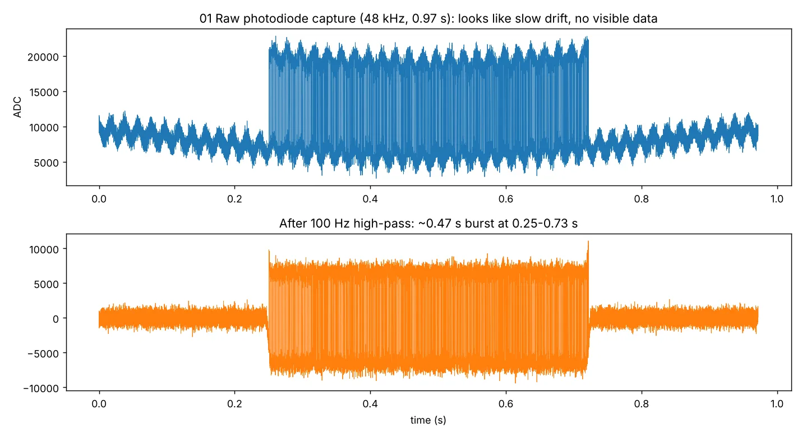
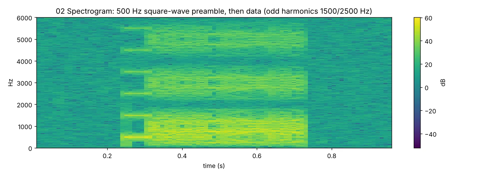
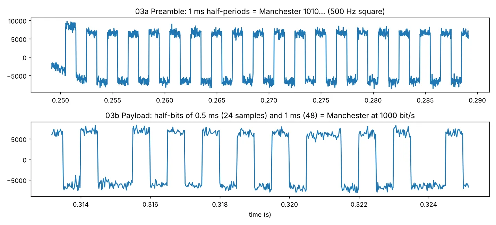
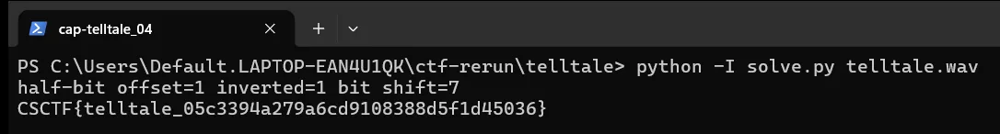

01Start point: the handout, telltale.wav
- What I found: 0.972 s of unipolar photodiode data (all samples positive, mean about 10400) on a slowly drifting baseline. The spectrum is dominated by 1-5 Hz drift and 50 Hz mains (ambient light), but also shows strong lines at 500 Hz and 750 Hz and odd harmonics (1500/2500 Hz).
- Thinking: odd harmonics point to a square-wave source rather than sine tones, so something is switching the LED well above where the ambient light lives.
02Pivot: a 100 Hz high-pass exposes the burst
- What I did: ran a 100 Hz high-pass (scipy butter and filtfilt) to remove the drift and mains.
- What I found: a clean burst from about 0.25 s to 0.73 s (about 0.47 s, samples 11960-34690); outside it there is only noise. Its spectrogram shows a pure 500 Hz tone with odd harmonics first, then a spread of 500-1250 Hz energy.
- Thinking: one steady tone followed by spread energy is what a preamble plus a bit stream looks like, not several tones, so the next move is the time domain.


03Pivot: the line code is Manchester at 1000 bit/s
- What I did: measured the zero-crossing run lengths inside the burst.
- What I found: runs are only ever 48 or 24 samples (1 ms or 0.5 ms at 48 kHz). The first 64 runs are all 48 samples, a 500 Hz square wave; after that 24 and 48 mix.
- Thinking: in Manchester coding, alternating bits 1,0,1,0 give exactly that square wave, so the start is a clock-sync preamble. A mix of 0.5 ms and 1 ms runs after it is Manchester data with 0.5 ms half-bits, which is 1000 bit/s.

04Flag: decode the half-bits
- What I did: sampled the signal sign at the centre of every 24-sample half-bit after the first edge, paired the half-bits, and tried both half-bit offsets, both polarities and all 8 bit shifts.
- What I found: half-bit offset 1 with inverted polarity ("01" = 1, "10" = 0) decodes cleanly. The other three offset and polarity combinations give "X" (invalid Manchester pairs) or garbage.
- Thinking: Manchester only allows the pairs 01 and 10, so the alignment with no invalid pairs is the right one. With a bit shift of 7 its bytes read as ASCII.
- Result: CSCTF{telltale_05c3394a279a6cd9108388d5f1d45036}
